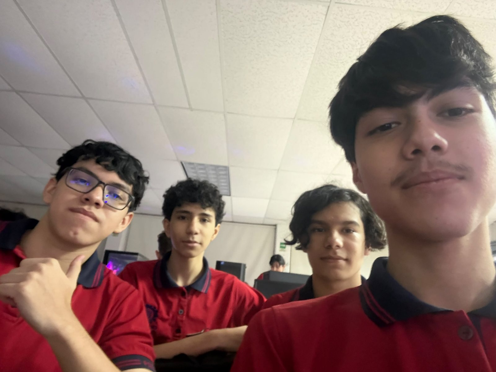
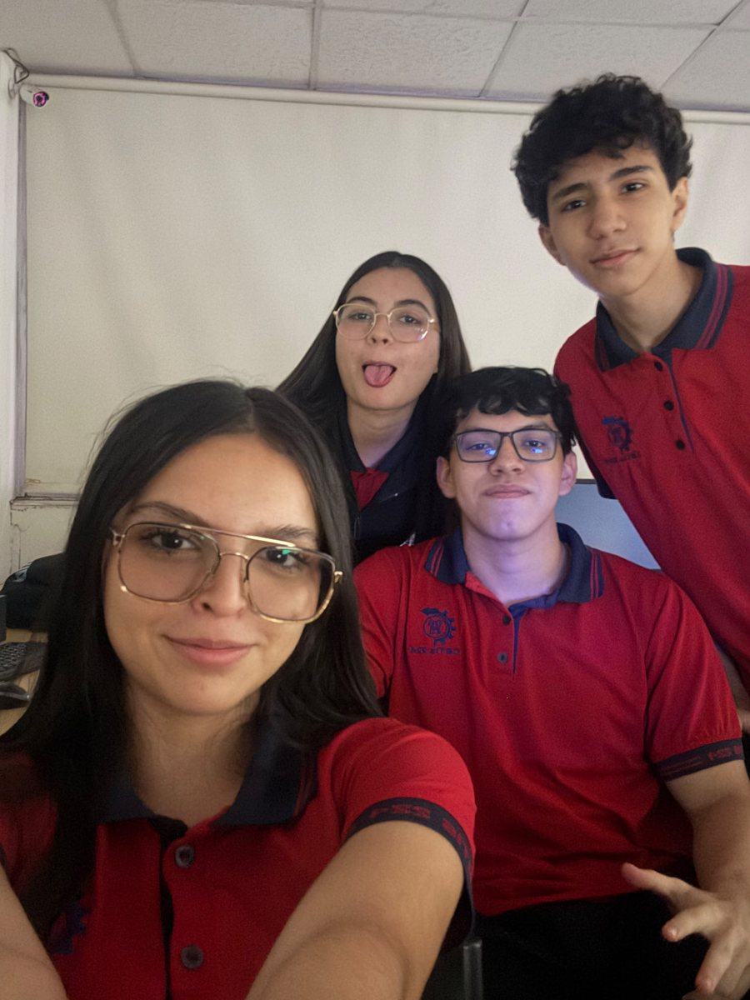
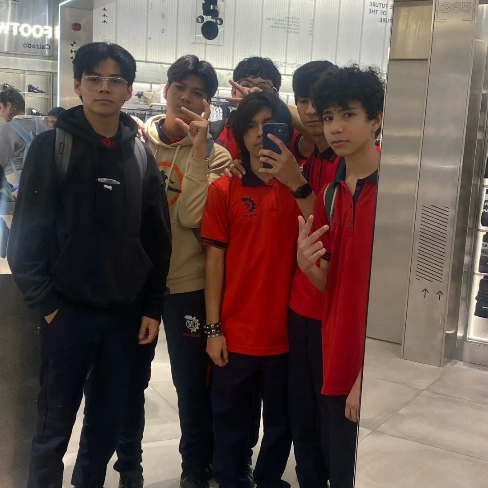
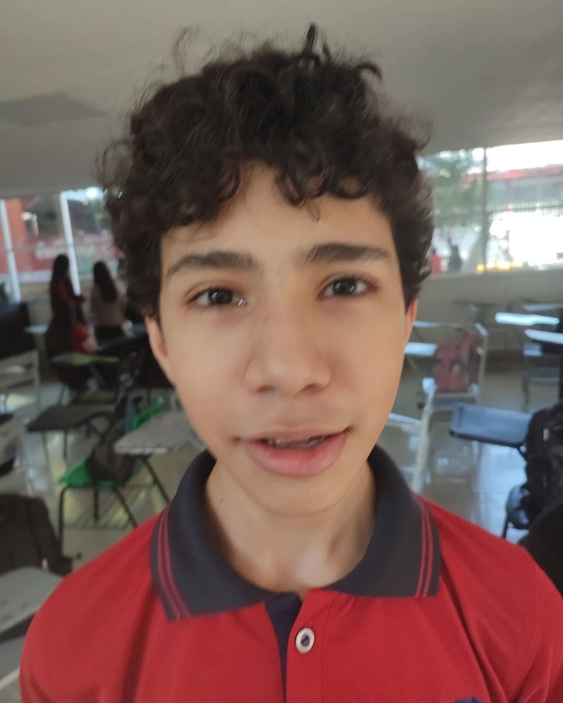
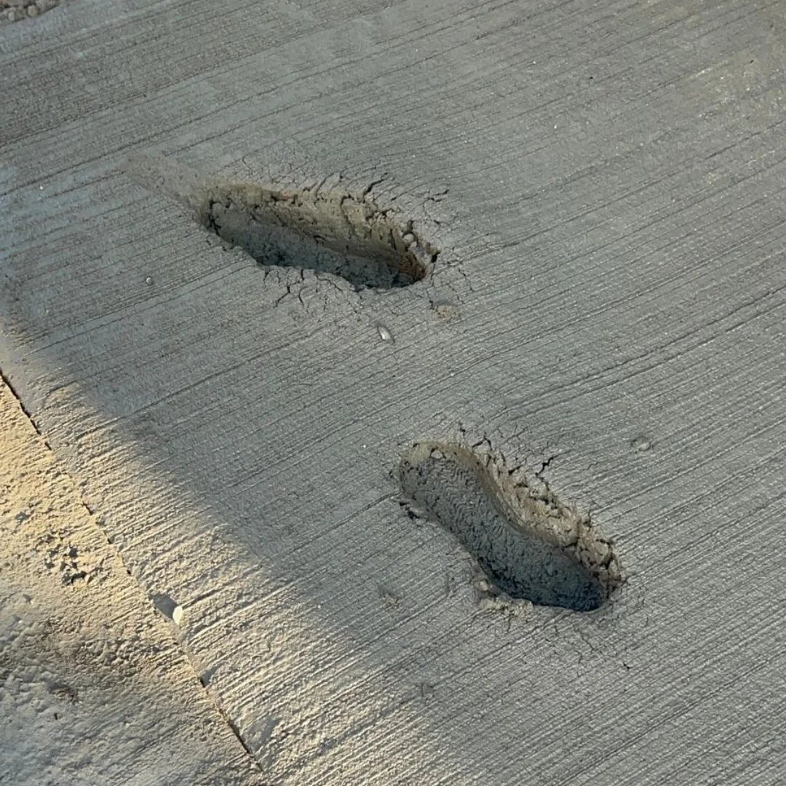
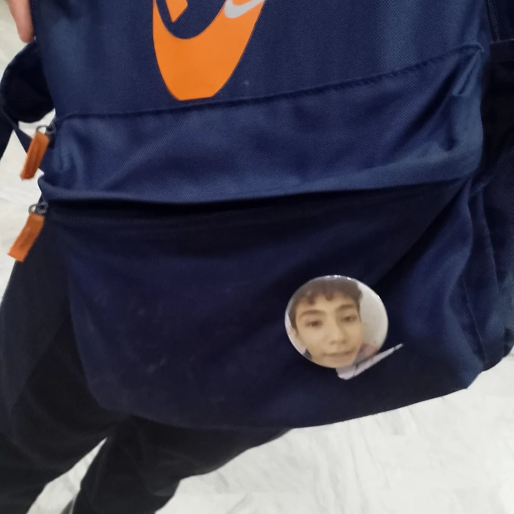

Mis compañeros de grupo
Con ellos hago equipo en los proyectos y nos ayudamos cuando algo no nos sale en clase.
Juan Carlos Camarena Pillado · CBTis 224 · 5.º semestre de Programación
Los amigos hacen que la escuela sea más divertida y que los problemas se vean más pequeños. Con ellos comparto tareas, juegos y muchas risas.
Con ellos hago equipo en los proyectos y nos ayudamos cuando algo no nos sale en clase.
Los conozco desde hace tiempo. Aunque cambie la escuela o el horario, seguimos en contacto.
Nos juntamos en línea para jugar Valorant, planear estrategias y reírnos de las partidas más locas.






Confianza Respeto Apoyo Honestidad Buen humor
Una buena amistad se nota en los momentos difíciles: cuando alguien te ayuda a estudiar, te escucha o simplemente te acompaña.